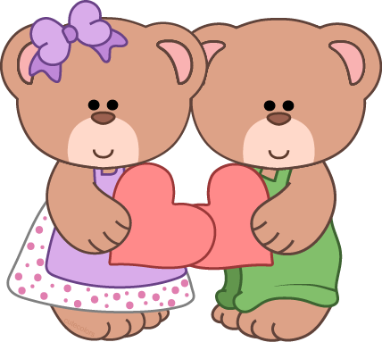

The name teddy bear comes from former United States President Theodore Roosevelt, who was commonly known as "Teddy" (though he loathed being referred to as such). The name originated from an incident on a bear hunting trip in Mississippi in November 1902, to which Roosevelt was invited by Mississippi Governor Andrew H. Longino. There were several other hunters competing, and most of them had already killed an animal. A suite of Roosevelt's attendants, led by Holt Collier, cornered, clubbed, and tied an American black bear to a willow tree after a long exhausting chase with hounds. They called Roosevelt to the site and suggested that he should shoot it. He refused to shoot the bear himself, deeming this unsportsmanlike, but instructed that the bear be killed to put it out of its misery, and it became the topic of a political cartoon by Clifford Berryman in The Washington Post on November 16, 1902. While the initial cartoon of an adult black bear lassoed by a handler and a disgusted Roosevelt had symbolic overtones, later issues of that and other Berryman cartoons made the bear smaller and cuter.
Morris Michtom saw the drawing of Roosevelt and was inspired to create a teddy bear. He created a tiny soft bear cub and put it in the shop window with a sign "Teddy's bear," after sending a bear to Roosevelt and receiving permission to use his name. The toys were an immediate success and Michtom founded the Ideal Novelty and Toy Co.
At the same time in Germany, the Steiff firm, unaware of Michtom's bear, produced a stuffed bear from Richard Steiff's designs. Steiff exhibited the toy at the Leipzig Toy Fair in March 1903, where it was seen by Hermann Berg, a buyer for George Borgfeldt & Company in New York (and the brother of composer Alban Berg). He ordered 3000 to be sent to the United States. Although Steiff's records show that the bears were produced, they are not recorded as arriving in the U.S., and no example of the type, "55 PB", has ever been seen, leading to the story that the bears were shipwrecked. However, the story is disputed - Gunther Pfieffer notes that it was only recorded in 1953 and says it is more likely that the 55 PB was not sufficiently durable to survive until the present day. Although Steiff and Michtom were both making teddy bears at around the same time, neither would have known of the other's creation due to poor transatlantic communication.
North American educator Seymour Eaton wrote the children's book series The Roosevelt Bears, while composer John Walter Bratton wrote an instrumental "The Teddy Bears' Picnic", a "characteristic two-step", in 1907, which later had words written to it by lyricist Jimmy Kennedy in 1932.
Early teddy bears were made to look like real bears, with extended snouts and beady eyes. Modern teddy bears tend to have larger eyes and foreheads and smaller noses, babylike features that enhance the toy's cuteness. Teddy bears are also manufactured to represent different species of bear, such as polar bears and grizzly bears, as well as pandas.
While early teddy bears were covered in tawny mohair fur, modern teddy bears are manufactured in a wide variety of commercially available fabrics, most commonly synthetic fur, but also velour, denim, cotton, satin, and canvas.